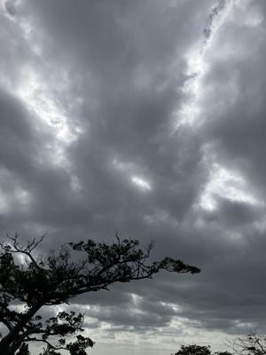
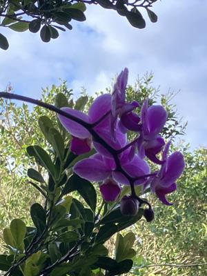

うるがいの話 ある日
最新: 雇用保険被保険者番号【うるがいの話 ある日】とは 一日だけのプログです
『うるがいの話』の最新一日だけのプログで、通信料が少なく経済的だ。カニの画像をクリックすると全ての日付が載る『うるがいの話』サイトを表示します
|
|
【うるがいの話】 うるがい(ｳﾙｶﾞｲ urugai)とは、『もずくがに』の名前でとても大きくなります。 |
|---|---|
|
|
【カミマヤーの話】 猫のことを方言でマヤーといいます。カミマヤー（kamimayaa）とは、神の猫のことです。 |
|
【たながぁの音楽】 たながぁ（ﾀﾅｶﾞｰ tanagaa）とは手長えびのことで、何種類かあり大きいのは車 エビぐらいになります。 |

|
【ぶながぁの話】 ぶながぁ(ﾌﾞﾅｶﾞｰ bunagaa)とは、赤い髪の毛、赤い身体、そして身長は１ｍ２０ｃｍ ぐらい、川の蟹を食べているの目撃された。場所は沖縄県国頭郡大宜味村のと ある村僕の隣近所に住んでいる爺さんから、聞いた話です。 |
|
|
【ギーマの話】 ギーマ(giima)とは、山原の里山に咲くスズランに似た、 花を付けます。実は食べられます、 気が付くと口の周りが紫になっています。 |
2024年03月28日 (木）雇用保険被保険者番号
20:59
 
３月１９日（火曜日）
オカさんヘ
お疲れ様です
国民年金が4月から、
変わります（新しい保険証はすでにもらっています）。
・・・・・・省略
オカさんから
4月1日に入社手続き時に持参ください。
4月1日は9時に本社にお出でください。
うるがい
ウルガイさんは
4月１日は、本土に移動しています。
また、４月の３週間目も本土にいる
可能性があります。
来週３月２６日の火、もしくは３月２８日の木の
出勤日に手続きが行えればと
希望します。
オカさんから
ああ、そうだね、大変失礼いました。そうだよね。
しっかりそれは理解していました。
それでは、28日木曜日にあさいち９時に来れますか。恐縮ですが、、、
午後の勤務を午前に振り替えるということ可能ですか。
ウルガイ
２８日木曜日の９時に伺います。
３月２５日（月） 16:34
オギさん
至急回答をお願いします。
・３／２８ １３：００－１６：００ ○○社案件の説明会があります。
参加可能ですか？
っけ、なんてスケジュールだ。オカさんの事務所へ行って、『保険の申請書
』と、『雇用保険被保険者資格取得届』の手続きを行った。毎回だけど、記
入例準備してよね、それと記入に必用な情報は、事前に伝えてよ。マイナン
バー番号は準備していたけど、雇用保険被保険者者番号は？。離職証明書は
？、持っていません（ハローワークに原本を提出してしまったので手元にな
い、コピーとっとくんだった）。午後のリモート会議は、えらいことなる。
あしたにつづく。
２０時５４分 ビットコインの総資産 ￥３０、９７４（↓１８）